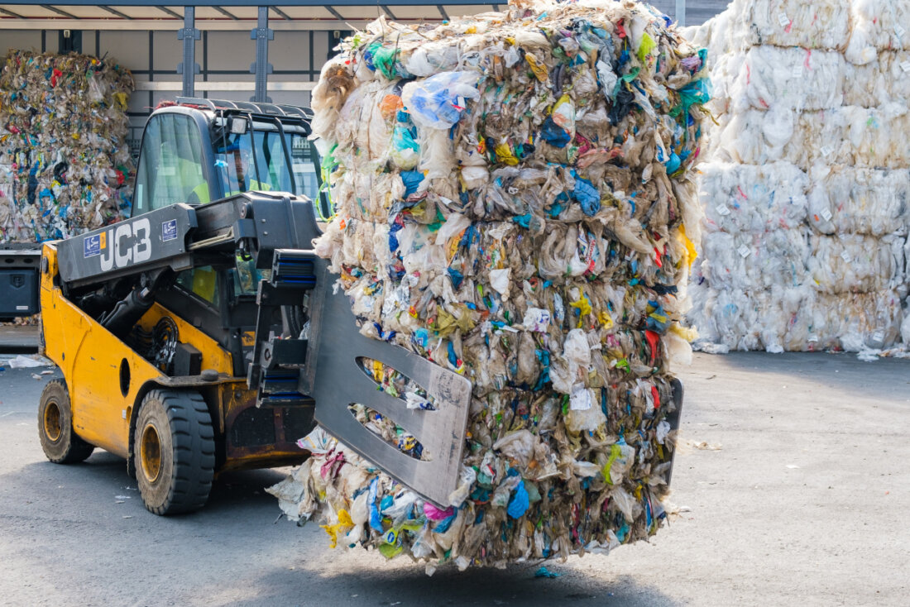
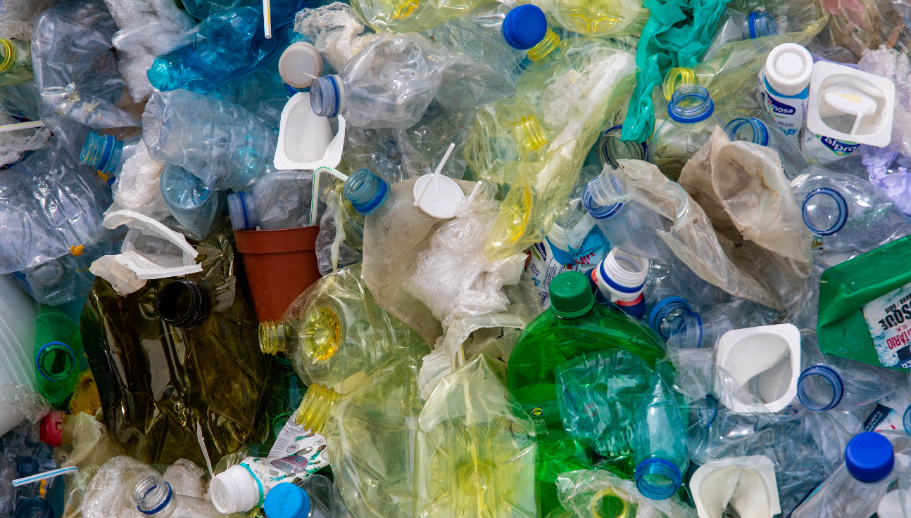

¡Sumate a ReciclAR!

Envases de plástico
El plástico tarda muchos años en degradarse, por lo que es importante reducir su impacto limitando su consumo, reutilizando los envases siempre que se pueda y reciclándolos cuando ya no nos sean útiles.
Los envases reciclables son:- Botellas de plástico
- Bote de detergente, champú, gel, etc.
- Las bolsas de patatas
- Tapas y tapones de plástico
- Bolsas de plástico (excepto las bolsas de basura)
- Tarrinas y tapas de yogurt
Envases de plástico
El plástico tarda muchos años en degradarse, por lo que es importante reducir su impacto limitando su consumo, reutilizando los envases siempre que se pueda y reciclándolos cuando ya no nos sean útiles.
Los envases reciclables son:- Botellas de plástico
- Bote de detergente, champú, gel, etc.
- Las bolsas de patatas
- Tapas y tapones de plástico
- Bolsas de plástico (excepto las bolsas de basura)
- Tarrinas y tapas de yogurt
Este es el categories__container
Este es el popular__container